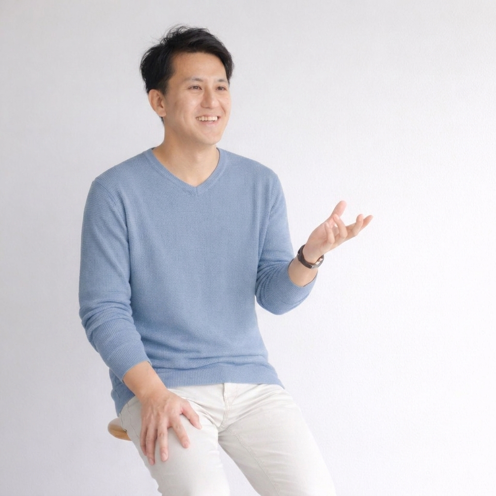

ひら先生の想い
〜 ママの心が軽くなると、
子どもの未来が動き出す 〜

子どもが学校に行かなくなると、お母さんは「自分の育て方が悪かったのではないか」と自分を責め、不安に押しつぶされそうになります。
しかし、不登校は決して悪いことではありません。むしろ、子どもが自分らしく生きるため、家族が本当に笑顔になるための「大切な転機」です。
私たちは、お母さんの心に寄り添い、共に歩んでいきます。
どう接していいか分からず、不安でいっぱい
子どもの将来が心配で、夜も眠れない
誰にも相談できず、ひとりで抱え込んでいる
自分を責めてしまい、笑顔を忘れてしまった
「不登校＝暗くて辛いもの」
その常識を、
一緒に変えていきませんか？
不登校という言葉には、どうしても暗いイメージや世間の目がつきまといます。そのため、「辛いことを我慢しながら、必死に苦しみながら乗り越えていかなくてはならない」と思われがちです。
しかし、私はそうは思いません。 「せっかく不登校になったんだから、この自由な時間を有効に使おう。そして、不登校を笑いながら超えていこう。」 そうやって親子で笑顔になり、前を向いて歩き出せる世の中にしていきたいと本気で思っています。
💡 ひとりで抱え込まず、まずはその胸の内をお聞かせください。
お母さんが笑顔を取り戻すことが、お子さんの未来を動かす最初の一歩になります。
精神論だけで片付けず、正しいプロセスで着実に
解決へと導くためのアプローチです
不登校になると「お母さんが変わらなくちゃ」とお母さん自身が焦ってメンタル講座を受講するケースが多く見られます。しかし、本当はお母さんのメンタルだけで不登校になるわけではありません。
今お母さんが何に、なぜ苦しんでいるのか。子どもたちがどうして学校に行けないのか。その原因は、経済的な問題かもしれないし、体調面、栄養面、あるいは社会的な問題かもしれません。それらをしっかりとした専門家と共に見立てていくことが最初のステップです。
正しく見立てた後は、それぞれのご家庭に必要な支援を適切に届けることが大切です。
例えば、経済的負担に悩むご家庭にメンタル講座をお勧めしても効果はありません。むしろ、お金の悩みを解消するFP（ファイナンシャルプランナー）さんにお繋ぎする方が一気に心が軽くなります。体調不良なら栄養士や睡眠専門家、お医者さんをお繋ぎし、精神的な面で悩む方にはメンタル講座を案内します。各家庭に必要な専門的支援をお届けしたいと考えています。
不登校を最終的に乗り越えるのは、お母さんではなく子ども自身です。だからこそ、子ども自身が自力で一歩を踏み出すステップが欠かせません。
ではお母さんは何もしなくて良いかといえば、そうではありません。子どもが自力で乗り越えていく過程を、焦らずにしっかりと見守れるよう、お母さん自身の「心と土台」を整えることが必要です。お母さんの体調面、メンタル面、経済面を整えることが、子どもを温かく見守る力に繋がります。
子どもの不登校に直面すると、まるで世界中で自分たちだけが取り残されたような気持ちになるかもしれません。
でも、あなたは一人ではありません。
まずは肩の力を抜いて、深呼吸をしてみませんか？
あなたが笑顔を取り戻すその日まで、私たちはいつもここにいます。
© ひら先生のオンラインサポート All Rights Reserved.